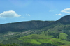
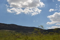
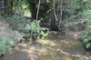
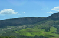
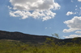
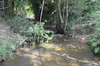

Aqui voce encontra:
Informações, sugetões e criticas Desideratu
 





License
Copyright (c) 2016 The Desideratu Authors. All rights reserved.
Hospedagem
Esta é a seção de Hospedagem
HoteisCasas
Quartos
Camping
Pousadas
Passeios
Esta é a seção de Passeios
LanchasChalanas
Natação
Cachoeiras
Alimentação
Esta é a seção de Alimentação
RestaurantesLanchonetes
Pousadas
Mapas
Esta é a seção de Mapas
Trilhas
Esta é a seção de Trilhas
Trilha do SolFotos
Esta é a seção de Fotos
Serviços
Esta é a seção de Serviços
Postos CombustivelPosto Saúde
Hospedagem: {{params.name}}
Pousada Trilha do SOLEsta é a seção {{params.name}}
Passeios: {{params.name}}
Esta é a seção {{params.name}}
Alimentação: {{params.name}}
Esta é a seção {{params.name}}
Mapas: {{params.name}}
Esta é a seção {{params.name}}
Trilhas: {{params.name}}
A trilha do Sol possui sua entrada pela MG-050, tudo bem sinalizado e fácil. Para ter acesso à fazenda é preciso desembolsar alguns Reais, o que não fará você se arrepender com o que ela tem para apresentar. Simplesmente maravilhoso o que essa trilha oferece ao seus visitantes. Procurem não se limitar aos caminhos convencionais, e não tenham medo de explorar tudo, pois vale a pena! A fazenda é composta por três cachoeiras: Limite, Grito e a terceira e mais bela, Poço Dourado. Essa última requer um pouquinho de esforço, pois a caminhada exige que você faça algumas partes pela água, o que é divertido caso não esteja acompanhado por uma pessoa que tem pavor de peixe. Recomendo ir cedo e levar lanchinho na mochila, pois leva com certeza o dia inteiro para aproveitar o máximo. A Trilha do Sol é uma passagem obrigatória para quem está visitando Capitolio.Esta é a seção {{params.name}}
Fotos: {{params.name}}
Esta é a seção {{params.name}}
Serviços: {{params.name}}
Esta é a seção {{params.name}}
Contato
Estamos aguardando seu contato no Whatsapp 31 99119-9097